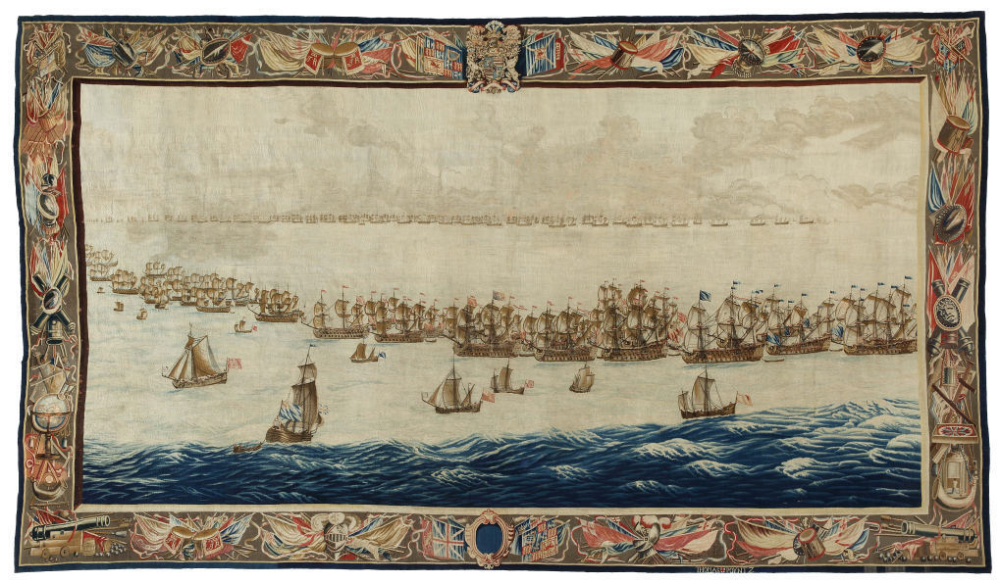

AR SCHEEPVAART MUSEUM
Project case
At the Maritime Museum, we were briefed by Ernst van Keulen about the Solebay tapestries, two pieces from a series of six. Despite their impressive size and a cost of 1 million euros each, visitors spend little time with them. The target audience, aged 45 to 65, often overlooks the tapestries’ story. The challenge is to engage visitors more deeply with the historical narrative behind these artworks.
Key goals:
How can we extend the target audience’s visit to 3-4 minutes and inform them about the event in a playful way?
My Concept:
Willem’s Logbook is an interactive experience where you collect pages from the logbook of Willem van de Velde the Elder, a Dutch painter present during the Battle of Solebay. He documented the battle from the Dutch fleet.
Using your smartphone, you search for points on the tapestries, tap them, and watch the tapestry come to life through animation and sound design. Collect all 7 pages to unlock a special page with a surprising twist about the tapestries.
The logbook text is a fictional story based on facts from various sources.

Why this concept?
- Augmented Reality allows the user to interact with the tapestries.
- The visitor can gather information about the sea battle and review it later.
- Gamification enhances motivation and keeps the player’s attention.

Tools:
- Figma
- Blender
- Unity